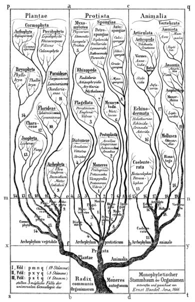

The Python's data model
A visual story
Objects and Classes
From a classical point of view, classes:
- belong to development time
- don't take data memory
- act as blueprints describing objects
- are not values
- are immutable
While objects:
- belong to execution time
- have identity
- allocate data memory
- act according to the constrains imposed by classes
- are mutable
a = [1, 2, 3]
b = [1, 2, 3]
assert a == b
assert a is not b
assert id(a) != id(b)
print('id(a) = {}'.format(id(a)))
print('id(b) = {}'.format(id(b)))The subclass relationship
Subclassing is about subclassifying.
classes subclass other classes by imposing new characteristics on their instances.
We can check this by using: issubclass(CLASS1, CLASS2)
class Animal(object): pass
class Snake(Animal): pass
class Python(Snake): pass
assert issubclass(Animal, object)
assert issubclass(Snake, Animal)
assert issubclass(Python, Snake)Subclassing is a transitive relationship:
- If
PythonsubclassesSnake... - and
SnakesubclassesAnimal... - then
PythonsubclassesAnimal.
assert issubclass(Python, Animal)Subclassing relationship belongs to classes only.
Objects can not subclass other objects.
It makes no sense to say an object subclasses a class.
o = Animal()
try:
issubclass(o, Animal)
except Exception as e:
print(e)
assert True
else:
assert False
The function issubclass() is implemented by checking
the __bases__ attribute of the class.
issubclass(B, A) returns True if A is a
base of B or if A is a base of one of the bases of B and so on...
assert Animal in Snake.__bases__
assert object not in Snake.__bases__
assert object in Snake.__bases__[0].__bases__
The root of the subclassing hierarchy is always
object. The object class
does not subclass anything (the empty tuple, not
None).
assert object.__bases__ == ()
assert object.__bases__ is not NoneIn the object-based programming world, the idea of this [classes and objects] arrangement is to ensure that more than one individual object can be relied upon to act the same way.
Matt Neuburg in Programming iOS 4
The type relationship
A class can be used to build an object.
Then we say object is of type class.
It can be checked by type(OBJECT) is CLASS or by
exploring the object's __class__ attribute.
o = object()
a = Animal()
s = Snake()
assert type(o) is object
assert type(a) is Animal
assert type(s) is Snake
assert o.__class__ is object
assert a.__class__ is Animal
assert s.__class__ is SnakeAs the relation cross the line between classes and objects, it is not transitive.
One object can only be of one class / type but one class can build multiple objects.
There is a universe V of all values (...). This is a complete partial order, (...) but in first approximation we can think of it as just a large set of all possible computable values.
A type is a set of elements of V.
Luca Cardelli and Peter Wegner
On Understanding Types, Data Abstraction, and Polymorphism.
The is a relationship
The is a relationship arises naturally a soon as
an
object is created by a class.
It refers to the object can behave as an instance of either its type or one of the superclasses of its type.
This relationship joins type and subclassing and it only works between objects and classes.
Can be checked by isinstance(OBJECT, CLASS).
mike = Python()
assert isinstance(mike, Python)Note how instantiation is implemented taking into account the other two relationships:
- First, type --> is object of type class?
jane = Python()
assert isinstance(jane, Python)
assert type(jane) is Python- Second, subclassing --> is object of a type subclassing class?
assert isinstance(jane, Animal)
assert issubclass(type(jane), Animal)An object is something that can be perceived by the senses.
My girlfriend, in a casual conversation.
What happen with Python is that everything is an object. Classes included!
assert isinstance(Animal, object)
assert isinstance(Snake, object)
assert isinstance(Python, object)How to give the classes, the object's nature? It makes sense to ask about the type of a class.
assert type(Animal)
assert type(Animal) is type
type() function is overloaded. It is not only a built-in function to return
the type of an object.
It is a class too.
So, what is the type of type?
assert type(type)
assert type(type) is type
And finally, if any class
is an object, it is
because either:
- The type of the class is
object - Or the class is of a type subclassing
object...
In other words:
object is one of the bases of the type of a class so
type subclasses object.
assert issubclass(type, object)
assert object in type(type).__bases__
assert object in type.__bases__Special thanks to:
Tomek Wszelaki for attending my Python mentoring and inspiring me this talk.
Beatriz Alonso Carvajales for all the support being my test-subject and coacher in drawing matters. I love you.
Sources & further reading
- Python Types and Objects Shalabh Chaturvedi
- How classes and instances differ in object based programming from the book Programming iOS 4 by Matt Neuburg at oreilly.com
- On Understanding Types, Data Abstraction, and Polymorphism by Luca Cardelli and Peter Wegner
- Are Java classes objects? discussion at stackoverflow.com
- Differences between Java OOP and Pythonic OOP discussion at prograamers.stackexchange.com
- The Python data model by python.org
- Data model at Wikipedia
About me ;)

- me
- Salvador de la Puente González
- @salvadelapuente
- My sites
- http://unoyunodiez.com
http://github.com/lodr